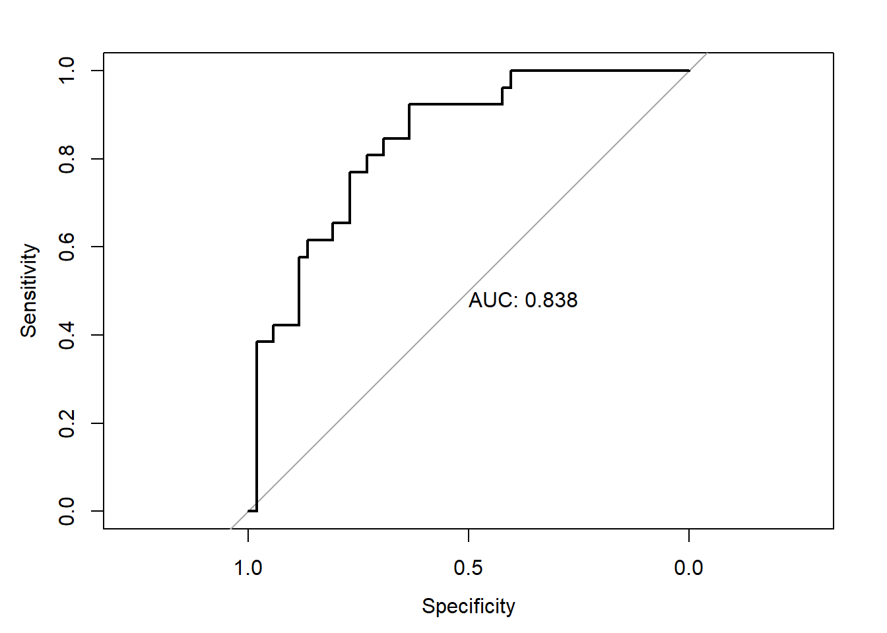
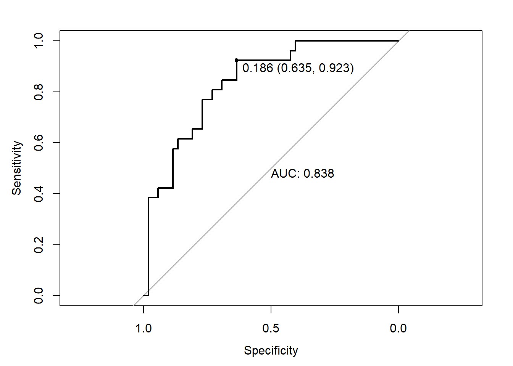

Chapter 2 Foundamental of machine learning
2.1 Types
- Supervised learning
It consists of learning to map input data to known targets, based on a set of examples. The main objectives that need supervised learning are: classification, regression, sequence generation form images, object detection.
- Unsupervised learning
It consists of identifying interesting transformations of the input data without the use of any targets and labels. It is genrally used for: noise detection, data visualization, understanding correlation between data features, data compression and reduction… he main objectives that need unsupervised learning are: clustering and dimensions reduction.
- Self-supervised learning
It is a specific type of supervised learning but without human-annotated labels. The labels used for supervising the learning process are genrated from input data itself. We can list: Autoencoders, temporally supervised learning (which consists of predicting the next frame in a video based the past frames).
- Reinforcement learning
It is based on agents that receives information from the environment and learn to select actions that maximize some reward. This technique is used for learning game playing (Atari, Go…), self-driving cars…
2.2 Model performance evaluation
The main goal of machine learning models is to make them generalize and perform well on data that they have never seen. This is why we try to minimize overfitting.
2.2.1 Training, validation and test sets
For evaluating models we need to split the available data into three sets: training, validation, and test. We train our model on the training set and we evaluate it on the validation set. We can modify parameters and tuning the model using these two sets (for example changing the number of layers and the hypermarameters). Once our model is ready and we identified a goog configuration, we test it on the test set.
2.2.1.1 Hold-out validation
It consists of splitting our train data into two sets: train and validation. We train our model and evaluate it on the validation set by computing validation metrics.
Hold-out validation (source: https://www.kdnuggets.com/2017/08/dataiku-predictive-model-holdout-cross-validation.html)
# we suffle the data
indices = sample(1:nrow(data), size = 0.8 *nrow(data))
# define the validation set
validation_data = data[-indices, ]
# define the training set
training_data = data[indices, ]
# train the model on the training set
model %>% train(training_data)
# evaluate on the validation set
validation_score = model %>% evaluate(validation_data)
# once we tuned the hyperparameters, we train our final model from scatch on all non-test data
model = get_model()
model %>% train(data)
test_score = model %>% evaluate(test_data)This technique is not reommanded when we have little data available: the validation and test data contain few samples. This issue can be identified once we have different model performance for various shuffling round in train data splitting. In order to address this issue, we can use k-fold validation method.
2.2.1.2 k-fold validation
It consists of splitting the training data into k partitions of equal size. For each partition i, the model is tained on the k-1 parititions, and evaluated on the partition i. The final score is then obtained by averaging the k scores.
Cross-fold validation (https://www.kdnuggets.com/2017/08/dataiku-predictive-model-holdout-cross-validation.html)
2.2.2 Evaluation metrics
There are several metrics for evaluating the performance of a trained model. The metric choice depends largely on the learning task (regression or classification) and on the objective of the developed model.
2.2.2.1 Classification models evaluation
Since classification models aim at predicting lables of new observations based on training data, the main evaluation metrics are based on the differences between the real/observed classes and predicted classes.
In order to review the different possible metrics we will implement a simple example of classification model.
We sill used the PimaIndiansDiabetes2 dataset provided by mlbench package. We will develop a model to predict the probabiliy of diabetes test positiviy based on some clinical variables.
Let’s load and split the data on training and test sets.
##
## Attaching package: 'dplyr'## The following objects are masked from 'package:stats':
##
## filter, lag## The following objects are masked from 'package:base':
##
## intersect, setdiff, setequal, union## Loading required package: lattice## Loading required package: ggplot2# Load the data
data("PimaIndiansDiabetes2", package = "mlbench")
pima.data <- na.omit(PimaIndiansDiabetes2)
# Inspect the data
sample_n(pima.data, 3)## pregnant glucose pressure triceps insulin mass pedigree age diabetes
## 1 1 103 80 11 82 19.4 0.491 22 neg
## 2 3 116 74 15 105 26.3 0.107 24 neg
## 3 4 129 86 20 270 35.1 0.231 23 neg# Split the data into training and test set
set.seed(123)
training.samples <- pima.data$diabetes %>%
createDataPartition(p = 0.8, list = FALSE)
train.data <- pima.data[training.samples, ]
test.data <- pima.data[-training.samples, ]Let’s fit LDA model on the training set and make predictions on the test data
##
## Attaching package: 'MASS'## The following object is masked from 'package:dplyr':
##
## select# Fit LDA
fit <- lda(diabetes ~., data = train.data)
# Make predictions on the test data
predictions <- predict(fit, test.data)
prediction.probabilities <- predictions$posterior[,2]
predicted.classes <- predictions$class
observed.classes <- test.data$diabetesWe can use the confusion matrix in order to count the number of ibservations correcly and incorrecty classified:
## predicted.classes
## observed.classes neg pos
## neg 44 8
## pos 10 16# Confusion matrix, proportion of cases
table(observed.classes, predicted.classes) %>%
prop.table() %>% round(digits = 3)## predicted.classes
## observed.classes neg pos
## neg 0.564 0.103
## pos 0.128 0.205The confusion matrix cells indcates the correct/false prediction in this way:
| Observed classes | |||
|---|---|---|---|
| . | Negative | Positive | |
| predicted classes | Negative | True Negatives (TN) | False Positives (FP) |
| . | Positive | False Negatives (FN) | True Positives (TP) |
Vased on the confusion matriw, we can determine various metrics to assess the classificaton performance:
## Confusion Matrix and Statistics
##
## Reference
## Prediction neg pos
## neg 44 10
## pos 8 16
##
## Accuracy : 0.7692
## 95% CI : (0.66, 0.8571)
## No Information Rate : 0.6667
## P-Value [Acc > NIR] : 0.03295
##
## Kappa : 0.4706
##
## Mcnemar's Test P-Value : 0.81366
##
## Sensitivity : 0.6154
## Specificity : 0.8462
## Pos Pred Value : 0.6667
## Neg Pred Value : 0.8148
## Prevalence : 0.3333
## Detection Rate : 0.2051
## Detection Prevalence : 0.3077
## Balanced Accuracy : 0.7308
##
## 'Positive' Class : pos
## Accuracy: the proportion of observations that have been correctly classified \[Accuracy = (TP + TN) / SampleSize\]
Precision: The proportion of positive identifications that were actually correct. \[Precision = TP / (TP + FP)\]
Sensitiviy (or recall): It is the True Positive Rate or the proportion correct positive identifications \[Sensitiviy = TP / (TP + FN)\]
Specificity: It is the True Negative Rate or the proportion correct negative identifications \[Specificity = TN / (TN + FP)\]
F1 score: The F1 score conveys the balance between the precision and the recall. \[F1 = 2 * precision * recall/ (precision + recall)\]
Kappa: Kappa is similar to Accuracy score, but it takes into account the accuracy that would have happened anyway through random predictions \[Kapa = (Observed Accuracy - Expected Accuracy) / (1 - Expected Accuracy)\]
cm = as.matrix(CM)
n = sum(cm) # number of instances
nc = nrow(cm) # number of classes
diag = diag(cm) # number of correctly classified instances per class
rowsums = apply(cm, 1, sum) # number of instances per class
colsums = apply(cm, 2, sum) # number of predictions per class
p = rowsums / n # distribution of instances over the actual classes
q = colsums / n # distribution of instances over the predicted classes
accuracy = sum(diag) / n
expAccuracy = sum(p*q)
kappa = (accuracy - expAccuracy) / (1 - expAccuracy)
kappa## [1] 0.4705882- ROC curve (Receiver Operating Characetristics Curve): It is a graphical way for assessing the performance or the accuracy of a classifier, which corresponds to the total proportion of correctly classified observations. The ROC curve is typically used to plot the true positive rate (or sensitivity on y-axis) against the false positive rate (or “1-specificity” on x-axis) at all possible probability cutoffs. This shows the trade off between the rate at which you can correctly predict something with the rate of incorrectly predicting something. The **Area Under the Curve *(AUC)** summarizes the overall performance of the classifier, over all possible probability cutoffs. It represents the ability of a classification algorithm to distinguish 1s from 0s
## Type 'citation("pROC")' for a citation.##
## Attaching package: 'pROC'## The following objects are masked from 'package:stats':
##
## cov, smooth, var## Setting levels: control = neg, case = pos## Setting direction: controls < cases
The gray diagonal line represents a classifier no better than random chance. A highly performant classifier will have an ROC that rises steeply to the top-left corner, that is it will correctly identify lots of positives without misclassifying lots of negatives as positives. If we want a classifier model with a specificity of at least 60%, then the sensitivity is about 0.88%. The corresponding probability threshold can be extract as follow:
# Extract some interesting results
roc.data <- data_frame(
thresholds = res.roc$thresholds,
sensitivity = res.roc$sensitivities,
specificity = res.roc$specificities
)## Warning: `data_frame()` is deprecated as of tibble 1.1.0.
## Please use `tibble()` instead.
## This warning is displayed once every 8 hours.
## Call `lifecycle::last_warnings()` to see where this warning was generated.## # A tibble: 45 x 3
## thresholds sensitivity specificity
## <dbl> <dbl> <dbl>
## 1 0.180 0.923 0.615
## 2 0.186 0.923 0.635
## 3 0.193 0.885 0.635
## 4 0.208 0.846 0.635
## 5 0.227 0.846 0.654
## 6 0.237 0.846 0.673
## 7 0.249 0.846 0.692
## 8 0.267 0.808 0.692
## 9 0.278 0.808 0.712
## 10 0.284 0.808 0.731
## # ... with 35 more rows# plot the best threshold with the highest sum sensitivity + specificity
plot.roc(res.roc, print.auc = TRUE, print.thres = "best")
- Logloss: A perfect model would have a log loss of 0. Log loss increases as the predicted probability diverges from the actual label. Instead of accuracy metric, Log Loss takes into account the uncertainty of the prediction based on how much it varies from the actual label. This gives us a more nuanced view into the performance of our model. We can find in this article, an intereseting explanation of the log loss metric: https://towardsdatascience.com/understanding-binary-cross-entropy-log-loss-a-visual-explanation-a3ac6025181a. \[LogLoss = -\frac{1}{N} \sum_{i=1}^{N} y_{i}*log(p(y_{i})) + (1-y_{i})*log(1-p(y_{i}))\]
# convert labels to 0/1
observed.classes.binary = as.character(observed.classes)
observed.classes.binary[observed.classes.binary == "neg"] = 0
observed.classes.binary[observed.classes.binary == "pos"] = 1
observed.classes.binary = as.numeric(observed.classes.binary)
# log loss function
LogLossMetric=function(actual, predicted)
{
result=-1/length(actual)*(sum((actual*log(predicted)+(1-actual)*log(1-predicted))))
return(result)
}
# result
LogLossMetric(actual = observed.classes.binary,
predicted = prediction.probabilities)## [1] 0.50865682.2.2.2 Regression models evaluation
MSE (Mean Suared Error): It is the average squared difference between the observed actual outome values and the values predicted by the model \[MSE = \frac{1}{n} \sum_{i=1}^{n} (\hat{y_{i}}-y_{i})^2\]
RMSE (Root Mean Suared Error):It s the squared root of the MSE.
\[RMSE = \sqrt{\frac{1}{n} \sum_{i=1}^{n} (\hat{y_{i}}-y_{i})^2}\] - RSE (Residual Standard Error): It is a variant of the RMSE adjusted for the number of predictors in the model
MAE (Mean Absolute Error): It is the average absolute difference between observed and predicted outcomes \[MSE = \frac{1}{n} \sum_{i=1}^{n} |\hat{y_{i}}-y_{i}|\]
R-squared (R2): It is the proportion of variation in the outcome that is explained by the predictor variables. The closer R-Squared is to 1 or 100% the better our model will be at predicting our dependent variable. \[R^2 = 1 - \frac{SS_{residual}}{SS_{total}} = 1 - \frac{\sum_{i=1}^{n} (y_{i}-\hat{y_{i}})^2}{\sum_{i=1}^{n} (y_{i}-\overline{y_{i}})^2}\]
AIC (Akaike’s Information Criteria): The basic idea of AIC is to penalize the inclusion of additional variables to a model. It adds a penalty that increases the error when including additional terms. The lower the AIC, the better the model.
BIC (Bayesian information criteria): It is a variant of AIC with a stronger penalty for including additional variables to the model
## -- Attaching packages ------------------ tidyverse 1.3.0 --## v tibble 3.0.0 v purrr 0.3.3
## v tidyr 1.0.2 v stringr 1.4.0
## v readr 1.3.1 v forcats 0.5.0## -- Conflicts --------------------- tidyverse_conflicts() --
## x dplyr::filter() masks stats::filter()
## x dplyr::lag() masks stats::lag()
## x purrr::lift() masks caret::lift()
## x MASS::select() masks dplyr::select()##
## Attaching package: 'broom'## The following object is masked from 'package:modelr':
##
## bootstrap## Fertility Agriculture Examination Education Catholic Infant.Mortality
## 1 77.6 37.6 15 7 4.97 20.0
## 2 77.3 89.7 5 2 100.00 18.3
## 3 54.3 15.2 31 20 2.15 10.8##
## Call:
## lm(formula = Fertility ~ ., data = swiss)
##
## Residuals:
## Min 1Q Median 3Q Max
## -15.2743 -5.2617 0.5032 4.1198 15.3213
##
## Coefficients:
## Estimate Std. Error t value Pr(>|t|)
## (Intercept) 66.91518 10.70604 6.250 1.91e-07 ***
## Agriculture -0.17211 0.07030 -2.448 0.01873 *
## Examination -0.25801 0.25388 -1.016 0.31546
## Education -0.87094 0.18303 -4.758 2.43e-05 ***
## Catholic 0.10412 0.03526 2.953 0.00519 **
## Infant.Mortality 1.07705 0.38172 2.822 0.00734 **
## ---
## Signif. codes: 0 '***' 0.001 '**' 0.01 '*' 0.05 '.' 0.1 ' ' 1
##
## Residual standard error: 7.165 on 41 degrees of freedom
## Multiple R-squared: 0.7067, Adjusted R-squared: 0.671
## F-statistic: 19.76 on 5 and 41 DF, p-value: 5.594e-10## [1] 326.0716## [1] 339.0226data.frame(
R2 = rsquare(model, data = swiss),
RMSE = rmse(model, data = swiss),
MAE = mae(model, data = swiss)
)## R2 RMSE MAE
## 1 0.706735 6.692395 5.32138